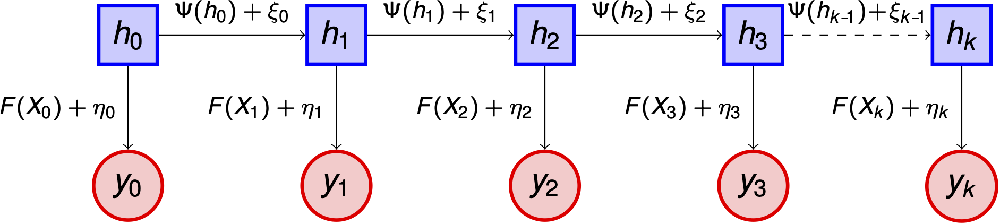

Problem 3: Sequential Inference and Data Assimilation#
Problem Statements#
Problem 3a: Data Assimilation with Known Kinematics#
An extension of the Lagrangian mapping approach in Problem 2 is to explicitly treat the problem dynamically using the velocity field to evolve the ice state. This is a building block towards Problem 3b, which uses a physics-based model for evolving the ice state (e.g., thickness).
Here we formulate a filtering problem in the Eulerian framework with ice thickness \(h_I(x,t)\) as the state variable. We model the thickness as being advected according to a known velocity field. Potential avenues for obtaining this velocity field include
Synthetic data generated by the numerical solution of a PDE
Satellite-based data as employed in Problem 2
Ignoring any thermodynamic thickening, the dynamics of the system are governed by the advection equation
Note that this model is similar to the continuity equation used in some sea ice models (see e.g., [Hibler1979]). At any instance in time, the likelihood functions developed for Problem 1 could be used to relate the thickness \(h_I\) to observations.
Problem 3b: Data Assimilation with Physics-Based Dynamics#
As an extension of Problem 3a, in Problem 3b we replace the velocity-field-governed advection of (1) with physics-based dynamics. The likelihood functions developed in Problem 1 can still be employed in data assimilation, but the model for ice dynamics will now capture evolution of the thickness field in addition to advection. The model will also provide information about internal ice stress, which is valuable for navigation purposes.
The choice of model is still open. [Feltham2008] provides a good overview of continuum based models. [Dansereau2016] and [Olason2021] provide an introduction to more recent efforts in continuum modeling with brittle rheologies. [Hunke2017] describes a model used in operation by the Navy. Recent work in the discrete element modeling of sea ice include [Damsgaardd2018] and [West2021]. In particular, [Chen2021] describes a data assimilation technique for discrete element models developed by the Courant-based sea ice MURI project. As a further extension of this problem, any subset of these models could be employed simultaneously within a multifidelity data assimilation framework.
Data Assimilation Framework#
The data assimilation framework described in this section is applicable to both Problem 3a and Problem 3b, but for the time being we focus on Problem 3a as a starting point.
State-Space Model#
Denoting the ice thickness by \(h\), we assume that it evolves in time according to the dynamic model
where \(\Psi\) is the solution operator for the advection equation (1) with the velocity field \(v\) given, and \(\xi = \{\xi_j\}_{j \in \mathbb{Z}^{+}}\) is an i.i.d. sequence of additive perturbations with \(\xi_0 \sim N(0, \Sigma)\) and \(\Sigma \succ 0\).
We assume that there is some uncertainty in the initial thickness \(h_0\), and we represent this fact by placing a prior on \(h_0\), \(h_0 \sim N(m_0, C_0)\). In the future, the ice-thickness distributions being developed in Problem 1 could be employed to define the prior on \(h_0\), and the distribution of \(\xi\) could be generalized, for example, to incorporate uncertainty in the velocity field.
We assume that we are able to obtain noisy observations of the states \(h_j\) via some possibly nonlinear operator \(F\), yielding a sequence of data \(y=\{y_j\}_{j \in \mathbb{N}}\) according to
The observational errors \(\beta=\{\eta_j\}_{j \in \mathbb{N}}\) form an i.i.d. sequence, independent of \((h_0, \xi)\), with \(\eta_1 \sim N(0,\Gamma)\) and \(\Gamma \succ 0\). The discrete dynamics (2) together with the observation relation (3) and independence assumptions define a state-space model for the data assimilation problem, illustrated below:
As with the prior on \(h_0\), developments from Problem 1, in this case data likelihoods \(\mathbb{P}(y_{j+1} \vert h_{j+1}, F)\), can be incorporated here to generalize beyond the additive Gaussian model.
Filtering#
Let \(Y_j=\{y_\ell\}_{\ell=1}^{j}\) denote the accumulated data up to time \(j\). Filtering is concerned with determining \(\mathbb{P}(h_{j} \vert Y_{j})\), the pdf associated with the probability measure on the random variable \(h_{j} \vert Y_{j}\). In particular, an effective filtering algorithm will sequentially update this pdf as the time index \(j\) is incremented, rather than computing the posterior “from scratch” at each iteration. The filtering update for obtaining \(\mathbb{P}(h_{j+1} \vert Y_{j+1})\) from \(\mathbb{P}(h_{j} \vert Y_{j})\) is usually carried out in two steps:
Prediction: obtain \(\mathbb{P}(h_{j+1} \vert Y_{j})\) from \(\mathbb{P}(h_{j} \vert Y_{j})\) via application of the dynamics (2)
Analysis: obtain \(\mathbb{P}(h_{j+1} \vert Y_{j+1})\) from \(\mathbb{P}(h_{j+1} \vert Y_{j})\) via Bayes’ formula
The most commonly employed filtering methods can be broadly categorized as either variational or statistical filtering. Variational methods, which include the widely popular three-dimensional variational algorithm (3DVAR), combine observational data with model predictions by numerically minimizing a cost function over the time interval of interest to estimate the mean of the filtering distribution. In 3DVAR the cost function corresponds to a regularized least squares data misfit.
Statistical methods interpret the filtering problem as one of characterizing the Bayesian posterior probability distribution, beyond simply estimating the mean, of the state given the data. The classical example of statistical data assimilation is the Kalman filter (KF), which provides sequential update equations to obtain the exact posterior of the state of a linear dynamical system with additive Gaussian dynamical and observational noise [Kalman1960]. A generalization of the KF known as the Ensemble Kalman Filter (EnKF) extends the KF to an approximate setting where the state distribution is represented by an ensemble of samples and the linear/Gaussian assumptions can be relaxed. The EnKF has become quite popular in the data assimilation community due to its ease of implementation and relatively feasible computational cost [Evensen2009]. Beyond the EnKF, there have been recent developments of computationally tractable nonlinear filtering schemes which aim to provide a more accurate prior-to-posterior update [Spantini2019], and there is particle filtering [Gordon1993] which gives an ensemble representation of the exact Bayesian posterior for any state space model, but is subject to degeneracy and often not practicable in high dimensions [Snyder2008].
As a starting point for Problem 3, we focus on mean estimation with variational methods. Let \((m_j, C_j)\) denote the mean and covariance of \(h_j \vert Y_j\), and let \((\widehat{m}_{j+1}, \widehat{C}_{j+1})\) denote the mean and covariance of \(h_{j+1} \vert Y_j\). The variational method 3DVAR updates \(m_j\) to obtain \(m_{j+1}\) by
For now we fix \(\widehat{C}_{j+1} \equiv \widehat{C}\), where \(\hat C\) is some SPD matrix, for all \(j\).
References#
- Hibler1979
Hibler. “A Dynamic Thermodynamic Sea Ice Model”. In: Journal of Physical Oceanography 9.4 (1979). issn: 0022-3670. doi: 10.1175/1520-0485(1979)009<0815:adtsim>2.0.co;2.
- Feltham2008
Daniel L. Feltham. “Sea ice rheology”. In: Annual Review of Fluid Mechanics 40 (2008), pp. 91–112. issn: 00664189. doi: 10.1146/annurev.fluid.40.111406.102151.
- Dansereau2016
V ́eronique Dansereau et al. “A Maxwell elasto-brittle rheology for sea ice modelling”. In: Cryosphere 10.3 (2016), pp. 1339–1359. issn: 19940424. doi: 10.5194/tc-10-1339-2016
- Olason2021
Einar Olason et al. “A new brittle rheology and numerical framework for large-scale sea-ice models”. (2021).
- Hunke2017
Elizabeth Hunke et al. CICE, The Los Alamos sea ice model. Tech. rep. Los Alamos National Lab (LANL), Los Alamos, NM (United States), 2017.
- Damsgaardd2018
Anders Damsgaard, Alistair Adcroft, and Olga Sergienko. “Application of discrete element methods to approximate sea ice dynamics”. In: Journal of Advances in Modeling Earth Systems 10.9 (2018), pp. 2228–2244.
- West2021
Brendan West et al. “Improving discrete element simulations of sea ice break up: Applications to Nares Strait”. In: arXiv preprint (2021)
- Chen2021
Nan Chen, Shubin Fu, and Georgy Manucharyan. “Lagrangian Data Assimilation and Parameter Estimation of an Idealized Sea Ice Discrete Element Model”. In: Journal of Advances in Modeling Earth Systems 13.10 (2021).
- Kalman1960
Rudolph Emil Kalman. “A New Approach to Linear Filtering and Prediction Problems”. (1960).
- Evensen2009
Geir Evensen. Data Assimilation: The Ensemble Kalman Filter. Springer Science & Business Media, 2009.
- Spantini2019
Alessio Spantini, Ricardo Baptista, and Youssef Marzouk. “Coupling Techniques for Nonlinear Ensemble Filtering”. In: arXiv preprint (2019).
- Gordon1993
Neil J Gordon, David J Salmond, and Adriam FM Smith. “Novel Approach to Nonlinear/Non-Gaussian Bayesian State Estimation”. In: IEEE Proceedings F (Radar and Signal Processing). Vol. 140.2. IET. 1993, pp. 107-113.
- Snyder2008
Chris Snyder et al. “Obstacles to High-Dimensional Particle Filtering”. In: Monthly Weather Review 136.12 (2008), pp. 4629-4640.